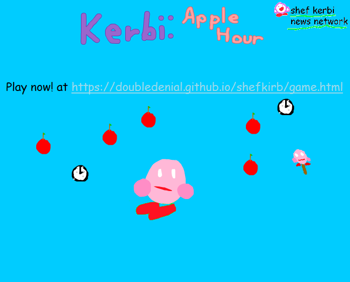
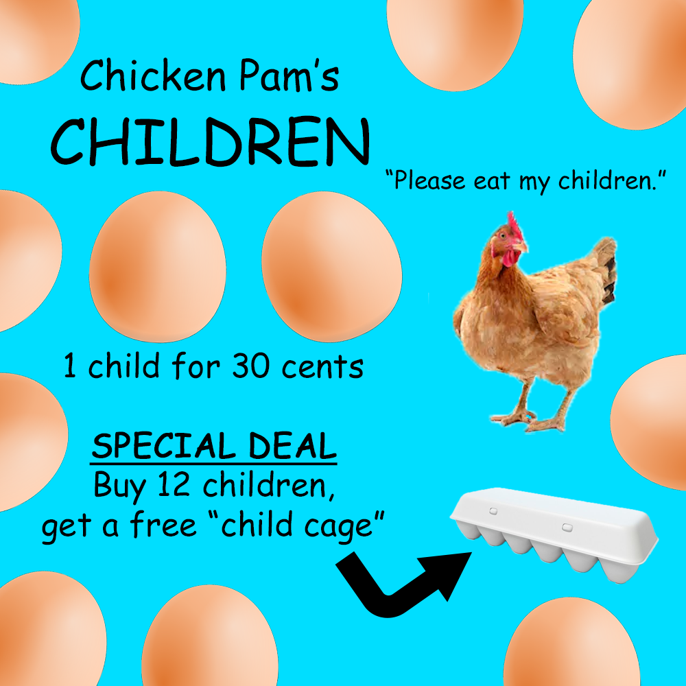

Episode 16: December 12th, 2018
Back to News Archive
| Back to Homepage | Back to Shef Werld<< Previous Episode | >> Next Episode
Shef Kerbi News Bulletin #14
Our Website
12 December 2018
ANNOUNMENT:
Supar Mash Bros Suprme is out, the greatest collab in video game history. This is so insane. There's so many fighters I'm sure there's one
for you.

Ask Bon And Bon’s Cat Gornfeld #2
Dear Gornfeld,
I was watching a bunch of videos of cats getting scared by cucumbers. Why are you guys so afraid of cucumbers?
-Confused Christine
Meow. Meow meow meow meow meow, meow meow meow. Meow meow.
Translation: We’re not as scared of the cucumbers themselves, Christine, as much as what the cucumbers represent. You see, cucumbers are
used by dogs to represent all worldly evils that plague cats. Cucumber actually comes from the Dog Latin “that which greatly sorrows the feline”.
Thanks for asking!
-Gornfeld, Bon’s Cat
BROKER NEWS
Stoify from a little while ago has apparently flown off into outer space. After hearing about the Worp Star he's decided that "no star-shaped object
is going to beat me!"
On an unrelated note, a meteor has apparently collided with Popp Stah in a remote location. It reportedly looked rather small and yellow.

Random Rain
In the Bobulee Cloauwdz, It has recently been raining sugar, marshmallows, berries, glitter and candy. Scientists are trying to find out what is causing
this.
WEATHER
one singular degree
THANK YOU FOR WATCH. PLEASE TUN E IN NEXT TIME FOR MORE NESW
This news has all been 100% quality approved to federal government standards by Shef Kerbi
pls no arrest because we use MS Paint thanks
this website is best viewed with Ned's Escape